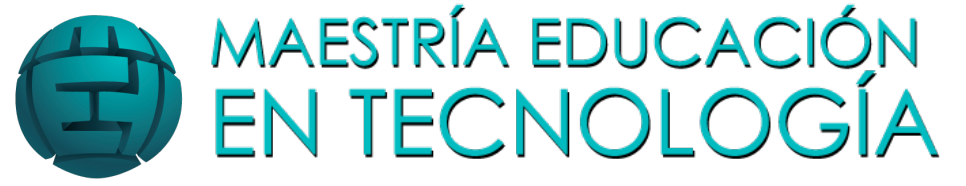

<div class="col-lg-12 col-md-12 col-sm-12 col-xs-12 ">
  <nb-card>
    <nb-card-header>
      
    </nb-card-header>
    <nb-card-body>
      <div class="row">
        <div class="col-lg-3 col-md-3 col-sm-12 col-xs-12 ">
            <button (click)="activar1()" class="btn btn-outlined btn-success btn-block">Perfil del programa</button>
            <button (click)="activar2()" class="btn btn-outlined btn-success btn-block">Perfil del aspirante</button>
            <button (click)="activar3()" class="btn btn-outlined btn-success btn-block">Perfil del egresado</button>
            <button (click)="activar4()" class="btn btn-outlined btn-success btn-block">Perfil de formación</button>
            <button (click)="activar5()" class="btn btn-outlined btn-success btn-block">Estructura curricular</button>
            <button (click)="activar6()" class="btn btn-outlined btn-success btn-block">Metodología</button>
            <button (click)="activar7()" class="btn btn-outlined btn-success btn-block">Líneas de investigación</button>
            <button (click)="activar8()" class="btn btn-outlined btn-success btn-block">Inscripción</button>
            <button (click)="activar9()" class="btn btn-outlined btn-success btn-block">Más información</button>
            <br>
        </div>
        <div class="col-lg-9 col-md-9 col-sm-12 col-xs-12 ">
          <div [hidden]="opcion !== 'programa'">
            <br>
            <p>El proyecto curricular de la Maestría en Educación en Tecnología con metodología virtual busca formar docentes que sean agentes de cambio en la construcción de conocimiento en el área, y que sean capaces de estructurar estrategias particulares en cuanto a lo conceptual, para el desarrollo pedagógico, didáctico y curricular.</p>
            <p>La Maestría tiene una visión humanística de la tecnología; se la apropia de forma integral, como saber técnico, sistémico, social y cultural al servicio de la formación, y con el objetivo de cualificar procesos académicos con eficiencia al privilegiar la formación de los docentes en sus contextos educativos. De tal manera, los proyectos de investigación o de innovación que hacen parte de la Maestría podrán aportar nuevos elementos al área y a la transformación de las instituciones educativas.</p>
          </div>            

          <div [hidden]="opcion !== 'aspirante'">
            <h3>Perfil del aspirante</h3>
            <br>
            <p>Está compuesto por profesionales en el área de la educación, preferiblemente con experiencia docente en cualquier nivel de formación y con vocación por los procesos de investigación e innovación en el área de la educación en tecnología, particularmente desde los aspectos pedagógicos y didácticos, las tecnologías digitales, los sistemas tecnológicos, la filosofía de la tecnología y sus relaciones con la sociedad y la cultura.</p>
          </div>

          <div [hidden]="opcion !== 'egresado'">
            <h3>Perfil del egresado</h3>
            <br>
            <p>El <strong>egresado</strong> se caracteriza por su capacidad para articular el diseño, la producción y la operación de instrumentos tecnológicos, así como las tecnologías de la información y la comunicación, en el aula. Además, el egresado tiene dominio de los fundamentos, procedimientos y acciones pedagógicas inherentes a la educación en tecnología. Tiene también competencias para identificar y proponer soluciones alternativas a problemas o necesidades del contexto inmediato, al reconocer e integrar saberes teóricos, metodológicos y de diseño de propuestas para el área de educación en tecnología. Así mismo, organiza, gestiona y lidera procesos académicos mientras asume un compromiso ético.</p> 
          </div>

          <div [hidden]="opcion !== 'formacion'">
            <h3>Perfil de formación</h3>
            <br>
            <p>Los estudiantes de la Maestría tienen que ser, preferiblemente, profesionales en el área de la educación, o tener experiencia docente en cualquier nivel de formación; además, deben tener vocación por los procesos de investigación e innovación en el área de la Educación en Tecnología. Particularmente, tienen que interesarse por temas de pedagogía y de didáctica, así como por el estudio de las tecnologías digitales, de los sistemas tecnológicos, y de la filosofía de la tecnología y sus relaciones con la sociedad y la cultura.</p>
          </div>

          <div [hidden]="opcion !== 'estructura'">
            <h3>Estructura curricular</h3>
            <br>
            <p>El programa tiene un total de <strong>41 créditos académicos</strong>, y está conformado por varios ejes de formación:</p>
            <ol>
              <li><p>Pedagogía y didáctica de la tecnología: formación en la pedagogía práctica de tecnologías, modelos y enfoques; en este eje se reflexiona sobre experiencias investigativas y, así mismo, se analizan.</p></li>
              <li><p>Tecnologías digitales: formación disciplinar.</p></li>
              <li><p>Perspectiva filosófica, social y cultural de la tecnología: formación en filosofía de la tecnología; también se analizan las relaciones de la tecnología con el individuo, la sociedad y la cultura.</p></li>
              <li><p>Investigación y profundización en educación en tecnología: formación en procesos de investigación.</p></li>
            </ol>
          </div>

          <div [hidden]="opcion !== 'metodologia'">
            <h3>Metodología</h3>
            <br>
            <p>El estudiante desarrollará su formación con <strong>metodología virtual (100%)</strong>. Con el fin de facilitar la flexibilidad y la movilidad, las actividades académicas tienen como objetivo fomentar procesos de construcción del conocimiento, del aprendizaje autónomo, significativo y colaborativo. Por esta razón, el egresado desarrollará competencias en modalidades como teletrabajo,  trabajador 2.0, trabajador del conocimiento y trabajo en red.</p>
          </div>

          <div [hidden]="opcion !== 'investigacion'">
            <h3>Grupos y líneas de investigación</h3>
            <br>
            <p>El grupo de investigación que apoya la formación de especialistas en el Proyecto Curricular de <strong>Educación en Tecnología</strong> es <strong>Didáctica de la Tecnología -DIDACTEC-</strong>, conformado en el año 1999  y que en la actualidad es reconocido institucionalmente y escalafonado en categoría B en Colciencias.</p>
            <p>Inicialmente el grupo de investigación desarrolló temáticas de estudio para la implantación de la línea de investigación en Pedagogía de la Tecnología, la cual se estructuró a partir de los núcleos problemáticos de Currículo para la tecnología y formación de docentes. Estos núcleos se abordaron desde los tópicos de modelos pedagógicos, ambientes de aprendizaje, planeación y evaluación del proyecto curricular y modelos de formación docente respectivamente.</p>
            <p>A partir de estos tópicos se desarrollaron temáticas sobre espacios físicos, materiales y estrategias didácticas, autoevaluación interna y social del Proyecto Curricular, modelos de formación para la educación básica y media entre otras, las cuales han sido temas de desarrollo de proyectos de investigación al interior del grupo <strong>DIDACTEC</strong> y en los trabajos de grado realizados por los estudiantes de la especialización.</p>
            <p>Teniendo en cuenta que los resultados de estos procesos de investigación y los avances en el panorama de la investigación, este grupo cuenta actualmente con dos líneas de investigación, entendidas como el conjunto de proyectos que se articulan en torno a un tema o problema común, desarrollado en consonancia con el desarrollo académico del proyecto curricular, de la Facultad y de la Universidad.</p>
            <ol>
              <li><p><strong>Didáctica de la tecnología</strong><br>La primera de estas líneas es la de Didáctica de la tecnología, la cual tiene como objetivo realizar la revisión teórica, formulación, aplicación, gestión y evaluación de estrategias metodológicas que faciliten los procesos de enseñanza y aprendizaje de la tecnología en el aula.<br>Esta línea se justifica en tanto se da a la tarea de plantear problemáticas relacionadas con los procesos,  modelos, enfoques y tendencias de la pedagogía de la tecnología que tienen lugar en los procesos de enseñanza y aprendizaje, las dinámicas de gestión en el aula y las estrategias.</p></li> 
              <li><p><strong>Educación en tecnología en medios virtuales</strong><br>Esta línea de investigación tiene como objeto realizar la revisión de los procesos de educación tecnológica apoyada en medios virtuales, plantear problemáticas en torno a su uso, proponer estrategias pedagógicas y didácticas para su uso, desarrollar objetos virtuales para su implementación y realizar una evaluación de su impacto en procesos de aprendizaje y construcción de conocimiento.<br>El trabajo investigativo en esta línea se justifica en tanto en los últimos tiempos la incursión de las tecnologías de la información y la comunicación -Tic-, ha marcado un hito importante en el planteamiento de estrategias de la formación, que ameritan ser consideradas al interior de los procesos de educación en tecnología, como objeto de estudio, además de de su impacto en la conformación de sociedad y de cultura actual.</p></li>
            </ol>
          </div>

          <div [hidden]="opcion !== 'inscripcion'">
            <h3>Inscripción</h3>
            <br>
            <p>Para el <strong>proceso de inscripción y selección</strong>, son necesarios los siguientes documentos y requerimientos:</p>
            <ol>
              <li><p>Formato de inscripción, anexos y certificado de pago en línea.</p></li>
              <li><p>Propuesta de trabajo de grado.</p></li>
              <li><p>Entrevista con dos docentes seleccionados por el Consejo Curricular.</p></li>
              <li><p>Acreditación del título de pregado (el programa de pregrado no necesariamente tiene que estar relacionado con el campo de la pedagogía).</p></li>
              <li><p>Examen de comprensión de lengua extranjera moderna.</p></li>
            </ol>
          </div>

          <div [hidden]="opcion !== 'informacion'">
            <h3>Más información</h3>
            <br>
            <dl>
                <dt>Coordinador(a):</dt>
                <dd>Antonio Quintana Ramírez</dd>
                <dt>Dirección:</dt>
                <dd>Avenida Ciudad de Quito (NQS) # 64 - 81 Oficina 203</dd>
                <dt>Horario de atención:</dt>
                <dd>Lunes a viernes de 8:00 a.m. a 5:00 p.m.</dd>
                <dt>PBX:</dt>
                <dd>3239300</dd>
                <dt>Ext:</dt>
                <dd>6311</dd>
                <dt>Correo electrónico:</dt>
                <dd><span><a href="mailto:meducaciontec@udistrital.edu.co">meducaciontec@udistrital.edu.co</a></span></dd>
                <dd><span><a href="mailto:meducaciontec@correo.udistrital.edu.co">meducaciontec@correo.udistrital.edu.co</a></span></dd>
                <dt>
                  <span><b><a href="http://www1.udistrital.edu.co:8080/web/maestria-educacion-en-tecnologia/">Sitio web</a></b></span>
                </dt>
            </dl>
          </div>
        </div>
      </div>
    </nb-card-body>
  </nb-card>
</div>